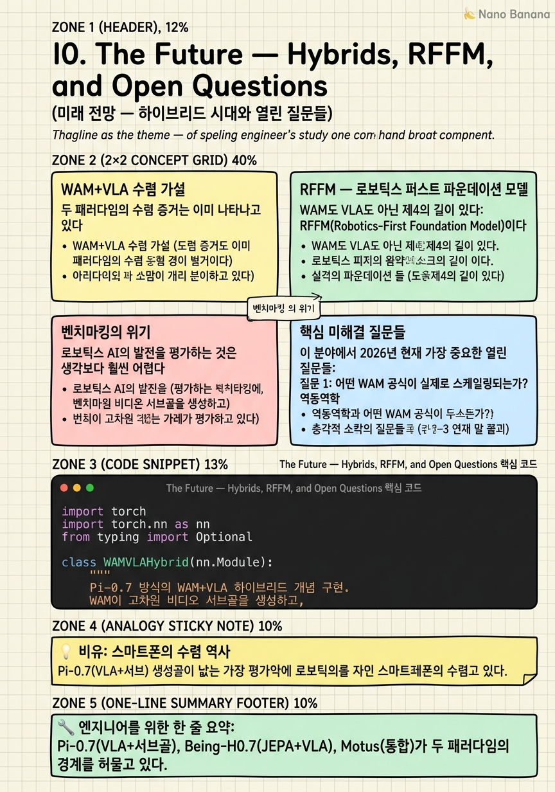

The Future — Hybrids, RFFM, and Open Questions

🎯 학습 목표
- WAM+VLA 하이브리드 수렴 가설을 설명할 수 있다
- RFFM(Robotics-First Foundation Model)이 기존 접근법과 어떻게 다른지 이해한다
- 로보틱스 벤치마킹의 현재 문제점을 설명할 수 있다
- 이 분야의 핵심 미해결 질문 3가지를 나열할 수 있다
- WAM/VLA 연구를 따라가기 위한 실용적 학습 경로를 파악한다
"WAM vs VLA"의 이분법은 이미 흐려지고 있다. Pi-0.7은 VLA에 세계 모형 서브골을 추가했고, Being-H0.7은 JEPA 표현 위에서 잠재 행동을 통합했다. Motus와 BagelVLA는 비디오 생성과 행동 생성을 단일 모델에서 통합하면서 두 패러다임의 경계를 허물고 있다.
NVIDIA 아티클의 저자는 결론을 이렇게 맺는다: "다음 세대 로봇 파운데이션 모델은 WAM+VLA 하이브리드일 가능성이 높다." 어느 쪽도 단독으로 모든 문제를 해결하지 못하지만, 두 패러다임의 강점을 결합하면 더 강력한 시스템이 될 수 있다.
이 마지막 챕터에서는 수렴 가설, RFFM이라는 새로운 패러다임, 벤치마킹의 위기, 그리고 이 분야를 따라가기 위해 개발자가 준비해야 할 것들을 다룬다.
핵심 내용
WAM+VLA 수렴 가설
두 패러다임의 수렴 증거는 이미 나타나고 있다.
VLA → WAM 방향: Pi-0.7은 VLA 기반이지만 비디오 모델이 생성한 서브골 이미지를 조건으로 사용한다. 언어 목표 → 비디오 서브골 → 저수준 행동의 흐름이다. VLA가 WAM의 계획 능력을 흡수한 것이다.
WAM → VLA 방향: Being-H0.7은 V-JEPA의 시각 표현을 백본으로 쓰지만, 텍스트 이해와 행동 출력을 VLA처럼 처리한다. 세계 모형 표현 위에 VLA의 언어 이해 능력을 얹는 구조다.
완전한 통합: Motus와 BagelVLA는 단일 모델에서 비디오 생성과 로봇 행동 생성을 동시에 수행한다. 이 모델들은 사용자가 "다음에 어떤 장면이 펼쳐질지 보여줘"라고 요청하면 비디오를 생성하고, "이 작업을 수행해줘"라고 하면 행동을 출력한다.
수렴 가설의 핵심: 언어 이해(VLA의 강점) + 물리 상상(WAM의 강점)을 통합한 모델이 다음 세대를 이끌 것이다.
RFFM — 로보틱스 퍼스트 파운데이션 모델
WAM도 VLA도 아닌 제4의 길이 있다: RFFM(Robotics-First Foundation Model)이다.
WAM은 비디오 모델을 로봇에 적용하고, VLA는 언어 모델을 로봇에 적용한다. 둘 다 원래 로봇이 아닌 다른 목적으로 설계된 모델을 "빌려온다". RFFM은 반대로, 로봇 상호작용 데이터를 처음부터 핵심 사전학습 신호로 쓰는 모델이다.
GEN-1이 현재 접근 중인 RFFM의 예다. 500,000 시간의 웨어러블 카메라 데이터를 사용해 사람이 세계와 상호작용하는 방식을 직접 학습한다. 비디오 관찰자(VLA/WAM)가 아닌 행동하는 주체(agent)의 시점에서 사전학습한다.
RFFM의 핵심 아이디어: - 비디오 → 행동 갭, 언어 → 행동 갭 모두 없애는 방법은, 처음부터 행동 데이터로 사전학습하는 것 - 에고센트릭(egocentric) 상호작용 데이터가 수동적 관찰 비디오보다 로봇에 더 적합할 수 있다
제약: 현재 500k 시간의 웨어러블 데이터를 확보할 수 있는 기관은 극소수다. 데이터 수집 인프라가 연구 접근성의 새로운 장벽이 되고 있다.
벤치마킹의 위기
로보틱스 AI의 발전을 평가하는 것은 생각보다 훨씬 어렵다. 저자는 이것을 "벤치마킹 위기"로 부른다.
문제 1 — Benchmaxxing: 모델이 특정 벤치마크(LIBERO, CALVIN)에 과적합되어 높은 점수를 받지만 실제 배포에서는 실패한다. 벤치마크 데이터와 비슷한 데이터로 파인튜닝해 점수를 높이는 것이다.
문제 2 — 쉬운 벤치마크: LIBERO와 CALVIN은 제한된 물체 세트, 고정된 환경에서의 반복 작업을 평가한다. 실제 가정 환경의 다양성을 반영하지 못한다.
대안: RoboLab과 MolmoSpaces가 더 나은 벤치마크로 제안된다: - 처음 보는 물체와 환경에서의 일반화를 평가 - 단순 반복 성공률 대신 새로운 조합에서의 성능 측정 - 실제 ELO 기반 상호 비교 (RoboArena)
실용적 교훈: 논문의 LIBERO 점수 99%가 실제로 의미하는 바를 비판적으로 읽어야 한다. "어떤 벤치마크로?"가 항상 첫 번째 질문이어야 한다.
핵심 미해결 질문들
이 분야에서 2026년 현재 가장 중요한 열린 질문들:
질문 1: 어떤 WAM 공식이 실제로 스케일링되는가? 역동역학, 공동 예측, 표현 전용 중 더 많은 데이터와 파라미터를 투입할수록 예측 가능하게 좋아지는 방식은 어느 것인가? 현재 증거는 공동 예측(DreamZero)과 표현 전용(Fast-WAM) 모두 경쟁력 있음을 보여주지만, 스케일링 법칙은 아직 불분명하다.
질문 2: 비디오 백본이 실제로 데이터 효율을 높이는가? WAM의 핵심 약속은 "비디오 사전학습으로 로봇 데이터를 덜 써도 된다"는 것이다. 이것이 사실이라면 소규모 기업도 로봇 AI를 개발할 수 있다. 하지만 현재 증거는 아직 불충분하다.
질문 3: VLA와 WAM이 합쳐지는가, 분리되는가? Pi-0.7과 Being-H0.7이 수렴을 시사하지만, 두 커뮤니티가 서로 다른 방향을 유지하면서 독립적으로 발전할 수도 있다.
질문 4: 벤치마킹 위기를 어떻게 해결하는가? 실제 가정 환경에서의 로봇 일반화를 공정하게 평가하는 표준 벤치마크가 아직 없다. 이것이 연구 방향을 왜곡시키고 있다.
개발자로서 준비할 것들
이 분야를 따라가거나 참여하려는 개발자를 위한 실용적 조언이다.
기초 기술 스택:
- PyTorch + Hugging Face Transformers 숙련
- 확산 모델 / 플로우 매칭 구현 경험
- CUDA 최적화 (긴 시퀀스 처리에 필수)
핵심 논문 읽기 경로:
- UniPi(2023) — WAM의 출발점
- GR-1(2024) — 재현 가능한 WAM
- Pi-0(2024, arXiv:2410.24164) — 현재 최강 VLA
- DreamZero(2026) — 현재 최강 WAM
- Being-H0.7(2026) — 수렴의 예
실습 추천:
- Wan 모델 API 실험 (Alibaba 오픈소스)
- DROID 데이터셋 탐색 (76k 로봇 에피소드)
- LeRobot(Hugging Face) 프레임워크로 VLA 파인튜닝
태도: 이 분야는 빠르게 변한다. 특정 모델의 세부 사항보다 설계 트레이드오프를 이해하는 능력이 더 오래 유효하다. "어떤 모델이 최고인가"보다 "왜 이 설계 선택이 이 트레이드오프를 만드는가"를 항상 물어라.
💡 비유로 이해하기
2000년대 초, 카메라, GPS 네비게이터, 음악 플레이어, 인터넷 단말기, 전화기는 모두 별개의 기기였다. 각각 전문화되어 있었고, "통합할 필요가 있는가"라는 질문이 있었다. 결국 스마트폰이 이 모든 것을 하나로 통합했다 — 각 기능을 완전히 포기하지 않으면서도.
VLA와 WAM의 수렴도 비슷한 경로를 밟을 가능성이 있다. 언어 이해(VLA의 핵심)와 물리 상상(WAM의 핵심)을 별개의 모델로 유지하는 것이 아니라, 하나의 통합 아키텍처에서 두 능력을 모두 갖추는 방향이다.
하지만 스마트폰이 DSLR 카메라를 완전히 대체하지 못했듯이, 하이브리드 모델이 순수 VLA나 순수 WAM의 특정 강점을 완전히 대체하지 못할 수도 있다. 최고의 사진을 위해서는 여전히 DSLR이 필요하듯, 특정 로봇 작업에서는 순수 패러다임이 최선일 수 있다.
💻 코드 예시
WAM+VLA 하이브리드 아키텍처의 개념적 구조를 코드로 표현해보자. Pi-0.7 방식(VLA + 비디오 서브골)을 단순화해 구현한다.
import torch
import torch.nn as nn
from typing import Optional
class WAMVLAHybrid(nn.Module):
"""
Pi-0.7 방식의 WAM+VLA 하이브리드 개념 구현.
WAM이 고차원 비디오 서브골을 생성하고,
VLA가 그 서브골을 조건으로 저수준 행동을 출력.
"""
def __init__(self, vla_backbone, video_backbone, action_head):
super().__init__()
# VLA 백본: 언어 이해 + 즉각적 행동 출력
self.vla = vla_backbone
# WAM 비디오 백본: 미래 계획 생성
self.video_wam = video_backbone
# 행동 헤드: 플로우 매칭
self.action_head = action_head
# 서브골 임베딩을 VLA 공간으로 투영
self.subgoal_proj = nn.Linear(512, 512)
def forward(self,
current_obs, # 현재 카메라 이미지
language_goal, # 언어 명령
use_subgoal=True # 서브골 사용 여부
):
if use_subgoal:
return self._hybrid_path(current_obs, language_goal)
return self._vla_only_path(current_obs, language_goal)
def _hybrid_path(self, obs, lang):
"""
WAM 서브골 → VLA 조건화 → 행동
느리지만 장기 계획 능력 보유
"""
# 1. WAM으로 미래 서브골 이미지 생성 (빠른 버전)
# Full 비디오가 아닌 단일 목표 프레임만 생성
subgoal_img = self.video_wam.generate_subgoal(
condition=obs, text=lang, steps=5 # 빠른 샘플링
)
subgoal_emb = self.subgoal_proj(subgoal_img) # (B, 512)
# 2. VLA가 현재 관찰 + 서브골을 조건으로 행동 생성
vla_emb = self.vla.encode(obs, lang) # (B, 512)
combined = vla_emb + subgoal_emb # 서브골 조건화
return self.action_head.sample(combined) # (B, 50, 7)
def _vla_only_path(self, obs, lang):
"""빠른 반응이 필요할 때: 서브골 없이 직접 행동"""
vla_emb = self.vla.encode(obs, lang)
return self.action_head.sample(vla_emb)
# 사용 패턴:
# - 장기 다단계 작업: use_subgoal=True (WAM 서브골 활용)
# - 빠른 반응 작업: use_subgoal=False (VLA 직접 경로)
print('WAM+VLA 하이브리드: 작업 유형에 따라 두 경로 전환')
print('서브골 있음: 장기 계획 + 물리 이해 (더 느림)')
print('서브골 없음: 빠른 반응 (VLA 수준 속도)')_hybrid_path()에서 WAM 비디오 백본이 단일 "목표 프레임"(서브골)을 생성한다 — 전체 비디오가 아닌 핵심 목표 장면만 생성해 속도를 높인다. 이 서브골이 VLA 임베딩에 더해져 행동 생성을 조건화한다. _vla_only_path()는 서브골 없이 순수 VLA 경로로 빠른 반응을 제공한다. Pi-0.7의 실제 구조도 이와 유사하게 세계 모형 서브골과 VLA 행동 헤드를 결합한다.
🏭 현업에서의 평가
✅ 시니어가 보는 것
- WAM+VLA 수렴 가설의 현재 증거를 구체적으로 설명할 수 있는가
- RFFM이 기존 접근과 근본적으로 다른 이유를 설명할 수 있는가
- 벤치마킹 위기를 인식하고 논문 결과를 비판적으로 읽을 수 있는가
⚠️ 레드 플래그
- "이 분야는 이제 해결됐다"고 보는 것 — 핵심 미해결 질문들이 있다
- RoboArena 점수를 무비판적으로 받아들이는 것
- RFFM의 데이터 장벽(500k 시간의 에고센트릭 데이터)을 모르는 것
🎤 예상 인터뷰 질문
- 5년 후 로봇 AI의 주류 패러다임은 무엇이 될 거라고 생각하나요? 그 이유는?
- LIBERO 벤치마크 99% 성공률이 실제 가정 로봇에 그대로 전이되지 않는 이유는 무엇인가요?
- 소규모 스타트업이 DreamZero 수준의 WAM을 개발하기 위해 어떤 전략을 택해야 할까요?
✨ 핵심 요약
수렴이 시작됐다
Pi-0.7(VLA+서브골), Being-H0.7(JEPA+VLA), Motus(통합)가 두 패러다임의 경계를 허물고 있다.
RFFM = 제4의 길
로봇 상호작용 데이터로 처음부터 사전학습. 에고센트릭 데이터가 핵심. 하지만 데이터 접근성이 새 장벽.
벤치마킹 위기
LIBERO/CALVIN 점수는 Benchmaxxing에 취약. RoboArena, RoboLab, MolmoSpaces가 더 나은 대안.
4가지 열린 질문
스케일링 법칙 / 데이터 효율 가설 / 수렴 vs 분리 / 벤치마킹 표준화.
개발자 학습 경로
UniPi → GR-1 → Pi-0 → DreamZero → Being-H0.7 순서로 논문을 읽고, LeRobot으로 실습하라.
트레이드오프 사고
"어떤 모델이 최고인가"보다 "왜 이 설계 선택이 이 트레이드오프를 만드는가"를 항상 물어라.